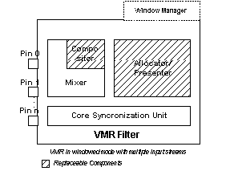

[The feature associated with this page, DirectShow, is a legacy feature. It has been superseded by MediaPlayer, IMFMediaEngine, and Audio/Video Capture in Media Foundation. Those features have been optimized for Windows 10 and Windows 11. Microsoft strongly recommends that new code use MediaPlayer, IMFMediaEngine and Audio/Video Capture in Media Foundation instead of DirectShow, when possible. Microsoft suggests that existing code that uses the legacy APIs be rewritten to use the new APIs if possible.]
Windowless mode is the preferred way for applications to render video inside an application window. In windowless mode, the Video Mixing Renderer does not load its Window Manager component, and therefore does not support the IBasicVideo or IVideoWindow interfaces. Instead, the application provides the playback window and sets a destination rectangle in the client area for the VMR to draw the video. The VMR uses a DirectDraw clipper object to ensure that the video is clipped to the application's window and does not appear on any other windows. The VMR does not subclass the application's window or install any system/process hooks.
In windowless mode, the sequence of events during connection and transition to the run state is as follows:
The following illustration shows the VMR in windowless mode with multiple input streams.

Configuring the VMR-7 for Windowless Mode
To configure the VMR-7 for windowless mode, perform all of the following steps before connecting any of the VMR's input pins:
Create the filter and add it to the graph.
Call the IVMRFilterConfig::SetRenderingMode method with the VMRMode_Windowless flag.
Optionally, configure the VMR for multiple input streams by calling IVMRFilterConfig::SetNumberOfStreams. The VMR creates an input pin for each stream. Use the IVMRMixerControl interface to set the Z-order and other parameters for the stream. For more information, see VMR with Multiple Streams (Mixing Mode).
If you do not call SetNumberOfStreams, the VMR-7 defaults to one input pin. After the input pins are connected, the number of pins cannot be changed.
Call IVMRWindowlessControl::SetVideoClippingWindow to specify the window in which the rendered video will appear.
Once these steps are completed, you can connect the VMR filter's input pins. There are various ways to build the graph, such as connecting pins directly, using Intelligent Connect methods such as IGraphBuilder::RenderFile, or using the Capture Graph Builder's ICaptureGraphBuilder2::RenderStream method. For more information, see General Graph-Building Techniques.
To set the position of the video within the application window, call the IVMRWindowlessControl::SetVideoPosition method. The IVMRWindowlessControl::GetNativeVideoSize method returns the native video size. During playback, the application should notify the VMR of the following Windows messages:
[!Note]
MFC applications must define an empty WM_ERASEBKGND message handler, or the video display area will not repaint correctly.
Â
Configuring the VMR-9 for Windowless Mode
To configure the VMR-9 for windowless mode, use the steps described for the VMR-7 for Windowless mode, but use the IVMRFilterConfig9 and IVMRWindowlessControl9 interfaces. The only significant difference is that the VMR-9 creates four input pins by default, rather than one input pin. Therefore, you only need to call SetNumberOfStreams if you are mixing more than four video streams.
Example Code
The following code shows how to create a VMR-7 filter, add it to the DirectShow filter graph, and then put the VMR into windowless mode. For the VMR-9, use CLSID_VideoMixingRenderer9 in CoCreateInstance and the corresponding VMR-9 interfaces.
HRESULT InitializeWindowlessVMR(
HWND hwndApp, // Application window.
IFilterGraph* pFG, // Pointer to the Filter Graph Manager.
IVMRWindowlessControl** ppWc, // Receives the interface.
DWORD dwNumStreams, // Number of streams to use.
BOOL fBlendAppImage // Are we alpha-blending a bitmap?
)
{
IBaseFilter* pVmr = NULL;
IVMRWindowlessControl* pWc = NULL;
*ppWc = NULL;
// Create the VMR and add it to the filter graph.
HRESULT hr = CoCreateInstance(CLSID_VideoMixingRenderer, NULL,
CLSCTX_INPROC, IID_IBaseFilter, (void**)&pVmr);
if (FAILED(hr))
{
return hr;
}
hr = pFG->AddFilter(pVmr, L"Video Mixing Renderer");
if (FAILED(hr))
{
pVmr->Release();
return hr;
}
// Set the rendering mode and number of streams.
IVMRFilterConfig* pConfig;
hr = pVmr->QueryInterface(IID_IVMRFilterConfig, (void**)&pConfig);
if (SUCCEEDED(hr))
{
pConfig->SetRenderingMode(VMRMode_Windowless);
// Set the VMR-7 to mixing mode if you want more than one video
// stream, or you want to mix a static bitmap over the video.
// (The VMR-9 defaults to mixing mode with four inputs.)
if (dwNumStreams > 1 || fBlendAppImage)
{
pConfig->SetNumberOfStreams(dwNumStreams);
}
pConfig->Release();
hr = pVmr->QueryInterface(IID_IVMRWindowlessControl, (void**)&pWc);
if (SUCCEEDED(hr))
{
pWc->SetVideoClippingWindow(hwndApp);
*ppWc = pWc; // The caller must release this interface.
}
}
pVmr->Release();
// Now the VMR can be connected to other filters.
return hr;
}
Â
Â